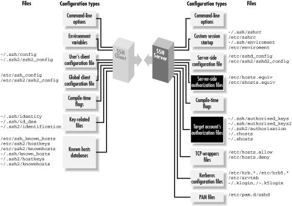

|  |
Chapter 8. Per-Account Server Configuration
Contents:
Limits of This TechniquePublic Key-Based Configuration
Trusted-Host Access Control
The User rc File
Summary

Figure 8-1. Per-account configuration (highlighted parts)
We have already seen a simple type of per-account configuration. A user may place a public key into her authorization file, instructing the SSH server to permit logins to her account by public-key authentication. But per-account configuration can go further, becoming a powerful tool for access control and playing some fun tricks with your account. Accepting or rejecting connections by particular keys or hosts is just the beginning. For instance, you can make an incoming SSH connection run a program of your choice, instead of the client's choice. This is called a forced command, and we'll cover quite a few interesting applications. Per-account configuration may control only incoming SSH connections to your account. If you're interested in configuring outgoing SSH connections by running SSH clients, refer to Chapter 7, "Advanced Client Use".8.1. Limits of This Technique
Per-account configuration can do many interesting things, but it has some restrictions that we will discuss:- It can't defeat security measures put in place by compile-time or serverwide configuration. (Thank goodness.)
- It is most flexible and secure if you use public-key authentication. Trusted-host and password authentication provide a much narrower range of options.
8.1.1. Overriding Serverwide Settings
SSH settings in a user's account may only restrict the authentication of incoming connections. They can't enable any SSH features that have been turned off more globally, and they can't permit a forbidden user or host to authenticate. For example, if your SSH server rejects all connections from the domain evil.org, you can't override this restriction within your account by per-account configuration.[113][113]There is one exception to this rule: trusted-host authentication. A user's ~/.shosts file may override a restriction placed by the system administrator in /etc/shosts.equiv. [Section 8.3, "Trusted-Host Access Control "][Section 3.4.2.3, "Trusted-host authentication (Rhosts and RhostsRSA)"]This limitation makes sense. No end-user tool should be able to violate a server security policy. However, end users should be (and are) allowed to restrict incoming connections to their accounts. A few features of the server may be overridden by per-account configuration. The most notable one is the server's idle timeout, which may be extended beyond the serverwide setting. But such features can't coerce the server to accept a connection it has been globally configured to reject. If you are an end user, and per-account configuration doesn't provide enough flexibility, you can run your own instance of the SSH server, which you may configure to your heart's content. [Section 5.2.2, "Running as an Ordinary User"] Be cautious, though, since this is seldom the right thing to do. The restrictions you're trying to circumvent are part of the security policy defined for the machine by its administrators, and you shouldn't run a program that flouts this policy just because you can. If the machine in question is under your administrative control, simply configure the main SSH server as you wish. If not, then installing and running your own sshd might violate your usage agreement and/or certainly annoy your sysadmin. And that's never a wise thing to do.
8.1.2. Authentication Issues
To make the best use of per-account configuration, use public-key authentication. Password authentication is too limited, since the only way to control access is with the password itself. Trusted-host authentication permits a small amount of flexibility, but not nearly as much as public-key authentication. If you're still stuck in the password-authentication dark ages, let this be another reason to switch to public keys. Even though passwords and public-key passphrases might seem similar (you type a secret word, and voilà, you're logged in), public keys are far more flexible for permitting or denying access to your account. Read on and learn how. |  | |
| 7.6. Summary |  | 8.2. Public Key-Based Configuration |